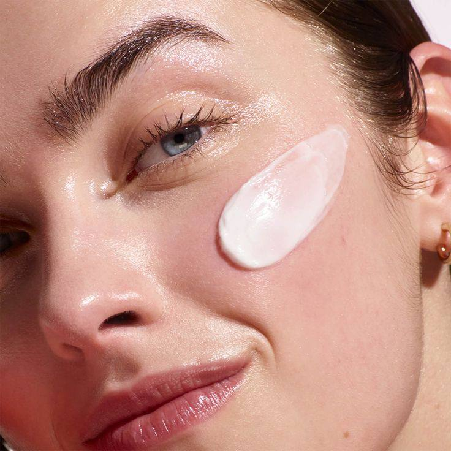

BASICS OF SKINCARE ROUTINE AND RECOMMENDED PRODUCTS
Cleanser
Toner

Serum

Moisturizer
Sunscreen

Normal Skin
The goal of any skincare routine for normal skin is to maintain its balanced state. Your focus should be on avoiding anything that could cause dryness or breakouts. With normal skin, you can easily target additional concerns like texture, radiance, or reducing wrinkles since your oil levels and hydration are well-regulated.
Stick to the basics: cleanse, exfoliate, hydrate, and protect your skin. If you have concerns like aging, wrinkles, or dark spots, tailor your routine to address those specific needs.
Remember, normal skin is what most people aim for, so the key is maintaining this balance. Avoid anything that clogs pores or strips your skin's moisture. Focus on keeping your skin healthy with cleansing, hydrating, and protection, while adding extra steps for specific goals like reducing wrinkles or brightening your complexion.
- Cleanser: SKIN1004 Madagascar Cleansing Foam; Round Lab Dokdo Cleansing Foam
- Toner: RoundLab 1025 Dokdo Toner; Anua Heartleaf 77%
- Serum: SKIN 1004 Madagascar Centella ampules
- Moisturizer: Round Lab Birch Juice Cream, Beauty of Joseon Dynasty Cream
- Sunscreen: Round Lab Birch Juice SPF 50+++/li>
Oily Skin
Cleanser: Use a gentle foaming cleanser or gel-based cleanser that helps remove excess oil without stripping the skin of its natural moisture.
Toner: Opt for a toner that contains ingredients like salicylic acid or witch hazel to help control oil production and reduce the appearance of pores.
Serum: Choose a lightweight, oil-free serum that helps regulate sebum production and offers hydration without clogging pores.
Moisturizer: Use a non-comedogenic, oil-free moisturizer to keep your skin hydrated without adding extra oil.
Sunscreen: Apply a mattifying, oil-free sunscreen daily to protect your skin from UV rays while controlling shine.
- Cleanser: Neutrogena Oil-Free Acne Wash
- Toner:Paula's Choice Skin Balancing Pore-Reducing Toner
- Serum: The Ordinary Niacinamide 10% + Zinc 1%
- Moisturizer: La Roche-Posay Effaclar Mat Oil-Free Mattifying Moisturizer
- Sunscreen: SKIN 1004 Centella SPF 30+++/li>
Dry Skin
Cleanser:Use a gentle, hydrating cleanser that won’t strip the skin of its natural oils. Cream-based or oil-based cleansers are ideal.
Toner: Choose a hydrating toner with ingredients like hyaluronic acid or glycerin to add moisture and soothe dry skin.
Serum: Opt for a rich, nourishing serum that helps to deeply hydrate and repair the skin barrier.
Moisturizer: Use a thick, emollient moisturizer that provides long-lasting hydration and helps lock in moisture.
Sunscreen: Apply a hydrating sunscreen that also protects against UV rays and helps maintain moisture levels in the skin.
- Cleanser: Klairs Gentle Black Facial Cleanser
- Toner:Etude House Soon Jung pH 5.5 Relief Toner
- Serum:Missha Time Revolution The First Treatment Essence
- Moisturizer:Laneige Water Bank Moisture Cream
- Sunscreen: Innisfree Daily UV Protection Cream
Combined Skin
Cleanser:Use a gentle, balancing cleanser that can effectively cleanse both oily and dry areas without disrupting the skin’s natural balance.
Toner: Choose a toner that helps to balance oil production and hydrate dry areas, ideally with a blend of hydrating and oil-controlling ingredients.
Serum:: Opt for a serum that provides hydration without being too heavy, and helps to balance both oily and dry zones.
Moisturizer:Use a lightweight, non-comedogenic moisturizer that hydrates without adding excess oil to the skin.
Sunscreen: Apply a broad-spectrum sunscreen that provides hydration while controlling shine, suitable for combination skin.
- Cleanser:Cosrx Low pH Good Morning Gel Cleanser
- Toner:Belif The True Tincture of Chamomile
- Serum:Dr. Jart+ Cicapair Tiger Grass Re.Pair Serum
- Moisturizer:Etude House Moistfull Collagen Cream
- Sunscreen: Missha All Around Safe Block Essence Sun SPF45/PA+++
Acne-prone skin
Cleanser:Use a gentle, non-comedogenic cleanser that helps to clear impurities and excess oil without irritating the skin.
Toner: Choose a toner with acne-fighting ingredients like salicylic acid or witch hazel to help control oil and reduce inflammation.
Serum:Opt for a lightweight serum with ingredients that target acne, such as niacinamide or benzoyl peroxide, to help reduce breakouts and soothe the skin.
Moisturizer: Use a non-comedogenic, oil-free moisturizer that hydrates without clogging pores or aggravating acne.
Sunscreen:Apply an oil-free, non-comedogenic sunscreen that helps to protect your skin from UV damage without causing breakouts.
- Cleanser:Cosrx Salicylic Acid Daily Gentle Cleanser
- Toner:Benton Aloe BHA Skin Toner
- Serum:Some By Mi AHA-BHA-PHA 30 Days Miracle Serum
- Moisturizer:La Roche-Posay Effaclar Mat
- Sunscreen: Innisfree Intensive Long-Lasting Sunscreen SPF50+
Sensitive skin
Cleanser:Use a gentle, non-irritating cleanser that effectively removes impurities without disrupting the skin barrier.
Toner:Choose a soothing toner with calming ingredients like chamomile or aloe vera to reduce redness and inflammation.
Serum:Opt for a hydrating serum with ingredients like hyaluronic acid or centella asiatica that helps to repair and calm sensitive skin.
Moisturizer:Use a rich, soothing moisturizer that provides hydration and strengthens the skin barrier without causing irritation.
Sunscreen:Apply a gentle, mineral-based sunscreen that offers protection without irritating sensitive skin.
- Cleanser:Klairs Rich Moist Foaming Cleanser
- Toner:Isntree Hyaluronic Acid Toner
- Serum: Dr. Jart+ Cicapair Tiger Grass Serum
- Moisturizer:Belif The True Cream Aqua Bomb
- Sunscreen:Purito Centella Green Level Unscented Sunscreen